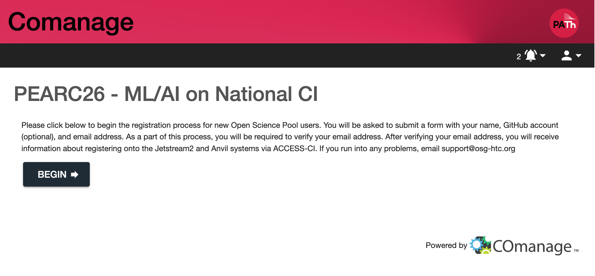
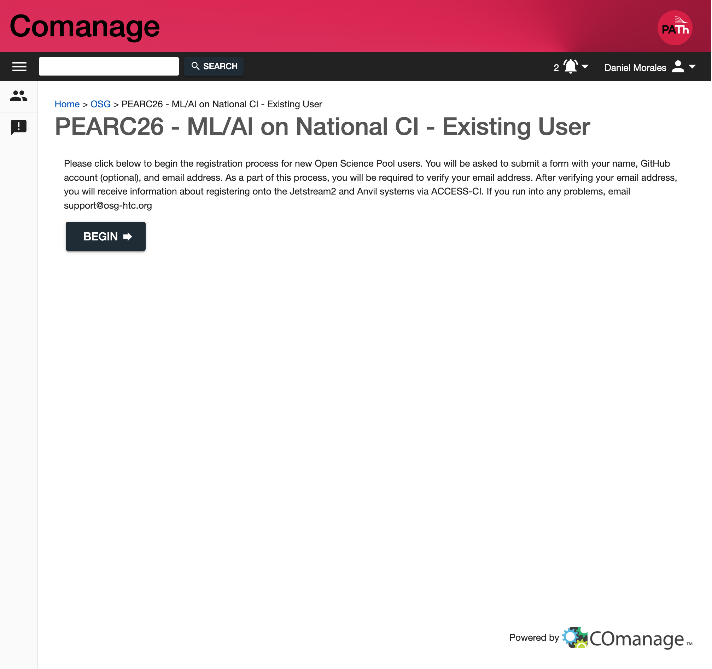
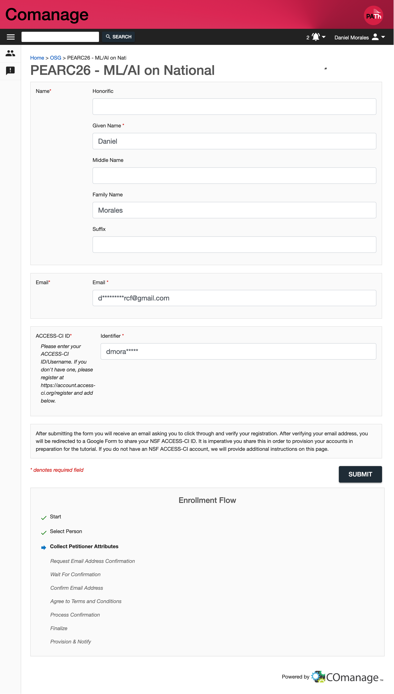
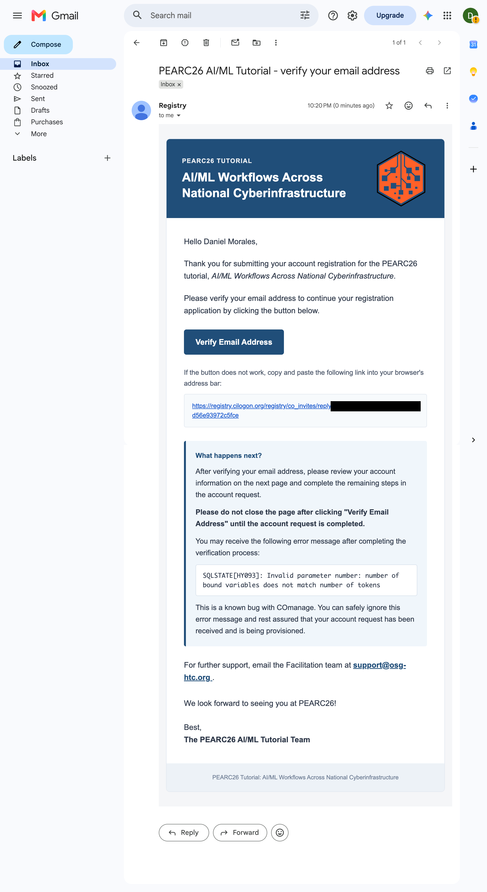
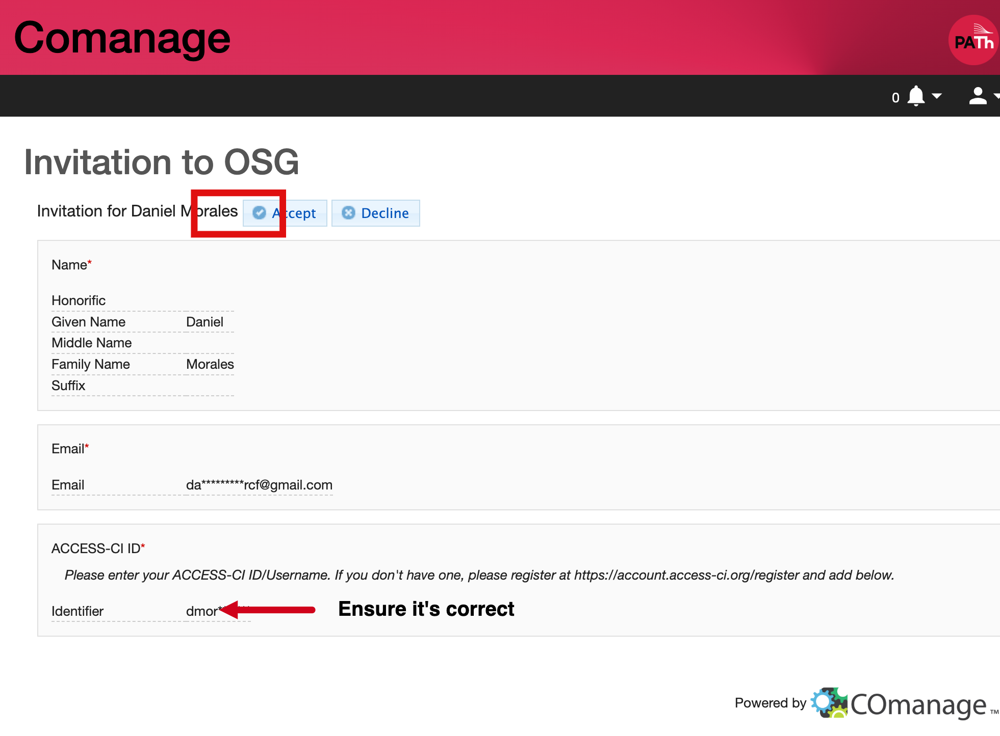
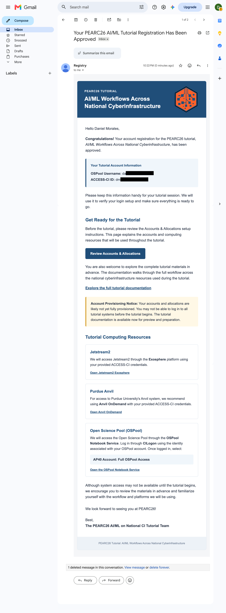

Registering for an Account via the OSPool + ACCESS-CI
For the purposes of this tutorial, we will be using the OSPool access point
(ap40) and ACCESS-CI. To sign up for an account, you will need to have an
institutional identity that is part of the InCommon federation. If your
institution is not part of the InCommon federation, you can use a Google or
GitHub account to register. You will need to have a US-based institutional
identity to register for an OSPool account. If you do not have one, please
contact the tutorial organizers for assistance.
If you already have an OSPool account, please also complete the registration process to link your OSPool account to your ACCESS-CI ID. This will allow you to access the tutorial resources and participate in the hands-on exercises.
Starting the registration process
You can start the application for a new account by following the registration process below:
Visit the new user enrollment page.
You will be presented with a CILogon Single-Sign On page. Select your institution and sign in with your institutional credentials:

Please use your institution’s credentials as this simplifies the verification process; only select the Google or GitHub identity providers if your institution is not an option.
After you have signed in, you will be presented with the self-signup form. Click the “BEGIN” button:

If you already have an OSPool account, the enrollment form will automatically redirect you to a separate page to link your OSPool account to your ACCESS-CI ID. Please follow the instructions on that page to complete the linking process. You will most likely need to log in with your CILogon identity again to complete the linking process. You will see a new page as below:

Enter your name and email address. In most cases, your institution will provide defaults for your name and email address. If you prefer, you may override these values.
You will need to provide a valid ACCESS-CI ID in the “ACCESS-CI ID” field. If you do not have an ACCESS-CI ID, please register for one at https://access-ci.org/register. While signing up for an ACCESS-CI ID, you will be asked to provide your institutional identity. Please use your institutional identity to sign up for an ACCESS-CI ID. To avoid delays in your account becoming active, please ensure you complete the enrollment for ACCESS-CI using an institutional ID rather than Google or GitHub, as these require further verification. If you do not have a US-based institutional identity, please contact the tutorial organizers for assistance.
Click the “SUBMIT” button:

{kind=link}
{kind=link}
{kind=link}
Verifying Your Email Address
After submitting your registration application, you will receive an email from registry@cilogon.org to verify your email address. The email will look similar to the following:
{kind=link}

Follow the link in the email and click the “Accept” button to complete the verification:
{kind=link}

Warning
You may receive an error message when you finish the verification process stating “SQLSTATE[HY093]: Invalid parameter number: number of bound variables does not match number of tokens”. This is a known bug with COmanage, however you can ignore this error message and rest assured that your account is being provisioned.
Receiving Your Account Information Email
After your account has been provisioned, you will receive an email from registry@cilogon.org with your account information. The email will look similar to the following:
{kind=link}

Please keep this email for your records, as it contains your OSPool username and other important information. You will need your OSPool username to log in to the OSPool access point and participate in the tutorial.
Note
Account Provisioning Notice: Your accounts and allocations are likely not yet fully provisioned. You may not be able to log in to all tutorial systems before the tutorial begins. The tutorial documentation is available now for preview and preparation.
Warning
If you do not receive your account information email within 24 hours of completing the registration process, please contact the tutorial organizers for assistance.